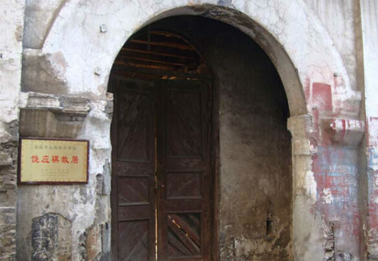
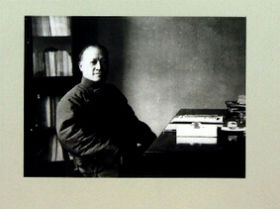
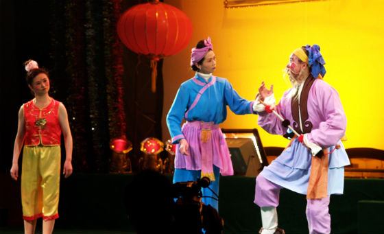
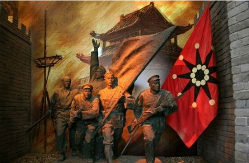
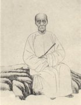

注册
|
登入
首页
景点
美食
习俗
名人
土家族
谭邦武-年过百岁的神龙溪纤夫
谭邦武8岁时就经常上船跟父亲在长江上走东闯西，12岁就已是船上的“正板”（船老大），他见证三峡的变迁和三峡船工的血泪史。是人们所了解的目前三峡地区年龄最长的船工，人称三峡船工“活化石”。
王璟芳-曾任民国政府财政次长
王璟芳(1876--1920) 恩施城关人。16岁中秀才，有文才，乡人誉为“施南才子”。曾东渡日本留学，入高等商业。入高等商业学堂。回国后，投孙中山，任广东省财政整理特派员。北洋军政府统治时期，曾一度任国会议员，

利川忠路风云人物之周金城
周金成（1880-1946），原名远庆，又名迎春，土家族，利川市忠路镇小河懿归坝人，辛亥革命志士。1880年3月5日丑时出生，少时启蒙于小河周家老宅私塾，1895年转入瞿塘学馆，在鸡公岭回龙寺，大坪，下坝川主庙等地将。

饶应祺-曾任新疆布政使，巡抚
新疆巡抚饶应祺（1837—1903），字子维，号春山；湖北恩施城关人，清拔贡，1877年因军功擢同州（今大荔）知府，1884年调任甘州（今张掖）知府，引黄河水灌田，大兴水利农垦，1885年调任兰州道，着重整顿财税，奖励工商，地方经济恢复迅速

廖南山-著名灯戏传人
廖南山原籍芭蕉乡人，1925年12月出生，家无兄弟姊妹，父母只养了他这根独苗，尽管不算口阔之家，但在那个贫穷的年代，廖家和众多农家一样，仍然缺衣少食。他12岁那年，成了孤儿。班主蒋吉安为师，学习木偶与皮影艺术。从此，廖南山和民间演艺业缘

清代诗人樊增祥
樊增祥（1846—1931）清代官员、文学家。原名樊嘉、又名樊增，字嘉父，别字樊山，号云门，晚号天琴老人，湖北省恩施市六角亭西正街梓潼巷人。光绪进士，历任渭南知县、陕西布政使、护理两江总督。辛亥革命爆发，避居沪上。袁世凯执政时，官参政院参政。

秦国镛（恩施人，中华民国第一任航校校）
谢松柏（恩施人，曾任甘肃省军区副司令员，省政协副主席等职）
王璟芳（恩施人，国名党官员，曾任民国政府财政
钱治安（恩施人，曾任武汉军区后勤部副部长等职））
黄在渔（恩施人，抗美援朝战斗二级战斗英雄，授少将军衔）
杨敏（恩施人，曾任广州军区副司
张荣楣（恩施人，辛亥革命志
秦国镛（恩施人，中华民国第一任航校校长
章柄麟（民主革命家，曾来恩施宣传革
吴宝炬（恩施人，曾任十二县
叶挺（广东人，曾被关押在
寇准（恩施人，宋代宰相，曾任巴东县令）族英雄
饶应祺（恩施人，曾任新疆布政使族英雄
秦家柱（恩施人，抗日战争时期空军爱
谢松柏（恩施人，曾任甘肃省军区副司令员，省政协副雄
雷世兴（恩施人，鸦片战争时期民族英雄）
copyright©2015-2015 www.enshi.com 版权所有 盗版必究
意见反馈
网站收录
免费声明
关于我们
使用帮助